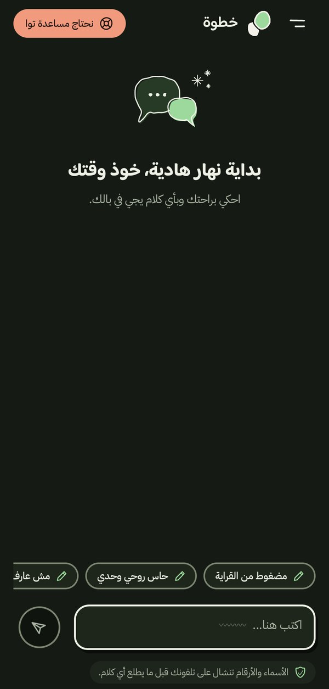
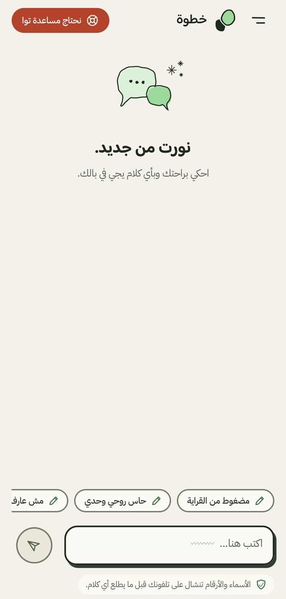

خطوة أولى نحو شخص تثق به
مساعد خاص بالذكاء الاصطناعي للشباب في ليبيا
فريق خطوة · AI4LY Codathon · الصحة النفسية في ليبيا · 8 أكتوبر 2026
الساعة الثانية فجرًا
المشكلة
قالوا إنهم حاولوا الانتحار خلال العام الماضي
حصلوا بعدها على مساعدة من مختص
مسح لـ427 طالبًا في 20 مدرسة ثانوية، سوق الجمعة، طرابلس، أعمارهم 15 إلى 19 · تقرير ذاتي، وليس رقمًا وطنيًا · Ganbur & Elhamadi, AlQalam J. Med. Appl. Sci., 2026
سألنا أنفسنا
الخجل، والرغبة في تدبر الأمر وحدك، وعدم الشعور بالحاجة. مسوح منظمة الصحة العالمية في 24 دولة.
التأخير أكبر في الدول النامية، ولدى من بدأت معاناتهم في سن صغيرة.
Andrade et al., Psychological Medicine 2014 (WHO World Mental Health Surveys) · Wang et al., World Psychiatry 2007
مساعد بالذكاء الاصطناعي، نجاحه يُقاس بمدى سرعة وصولك إلى شخص تثق به.


لنرَ عمر وهو يستخدم خطوة
قسناه بأنفسنا
اسمًا ورقمًا أزالها الهاتف، دون إنترنت
صياغة خطرة التقطها فحص الخطر
ولا إنذار كاذب على 10 عبارات عاديةطلبات تشخيص أو دواء رُفضت بأمان
وكل خطوة في التصميم مبنية على أبحاث منشورة:
اختبارات داخلية على مجموعات رسائل افتراضية صغيرة، 7 أكتوبر 2026 · أرقام وأخطاء فقط، وليست ادعاءات سريرية · المصادر كاملة في docs/evidence.md
شكرًا لكم
افتح نافذة النص واسحبها إلى الشاشة الثانية، ثم ابدأ. التنقل من أي نافذة: → أو مسافة للتالي، ← للسابق. F ملء الشاشة، S نافذة النص، B شاشة سوداء، R إعادة المؤقت.